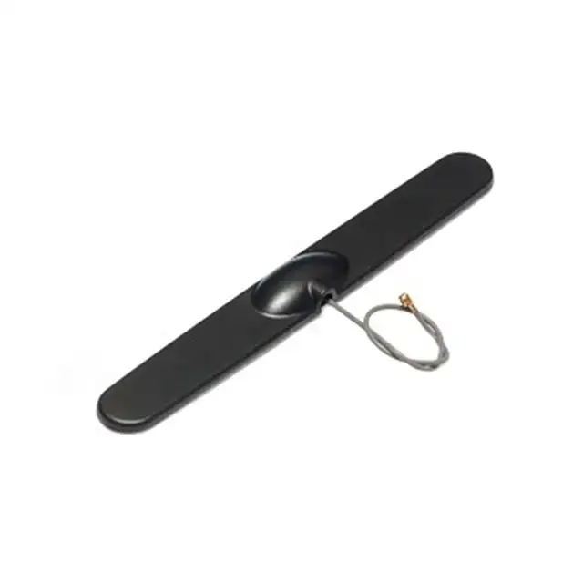
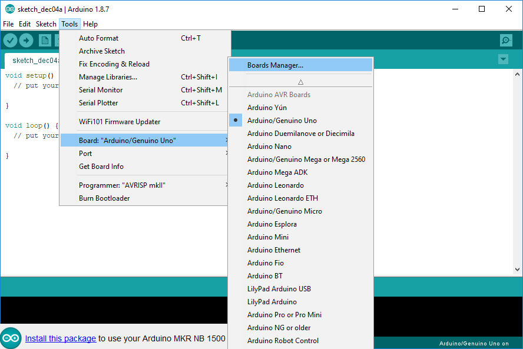
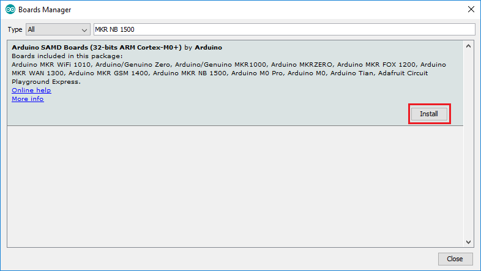
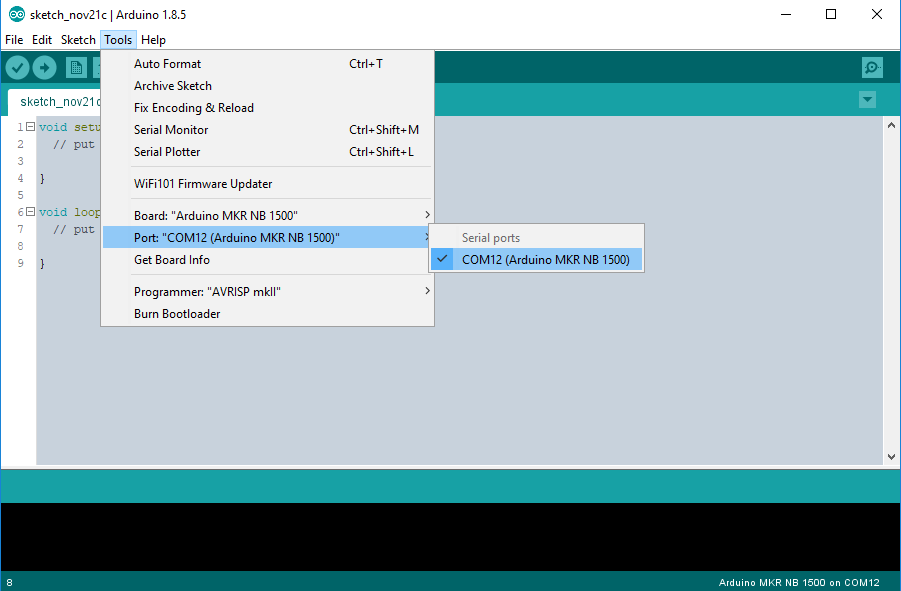
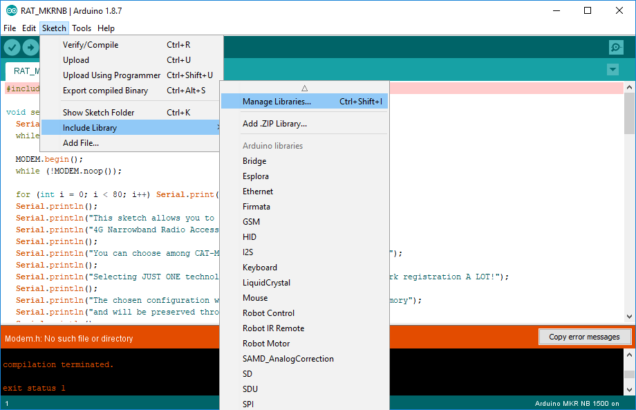
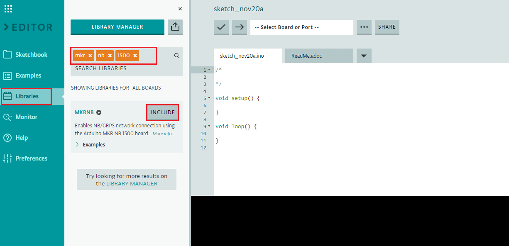
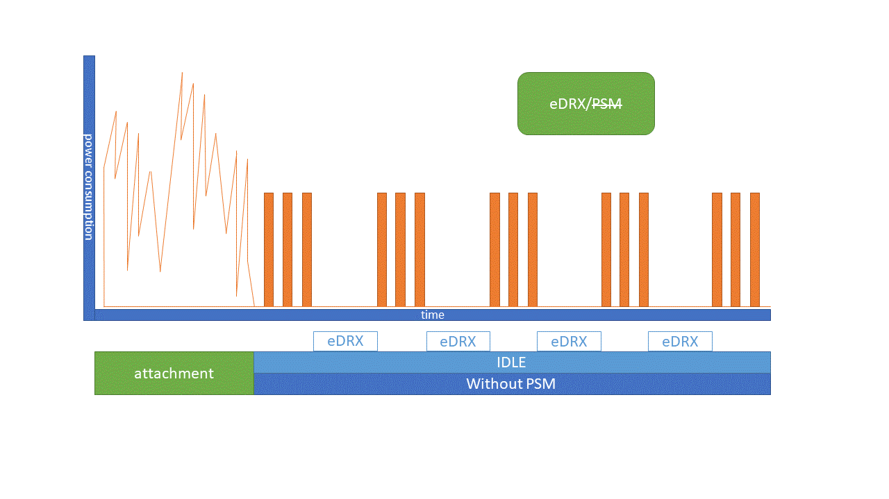
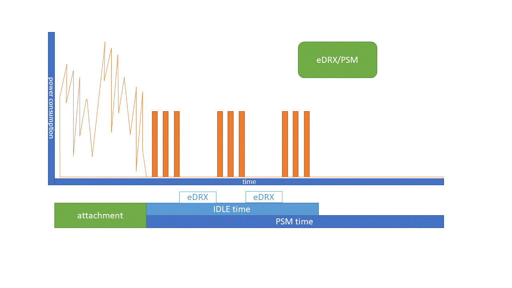
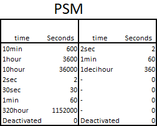

Table of Contents
Arduino StarterKit for IoT-Activation
What is Arduino?
Arduino is an open-source electronics platform based on easy-to-use hardware. The Arduino software is easy for beginners an flexible enough for advanced users
Arduino MKR NB-1500
The MKR branch of the Arduino board family is dedicated to the IoT so it tries to provide solutions for devices in remote locations without a high speed Internet connection, or in situations in which power isn’t available.
The Arduino MKR NB 1500 adds the wireless connectivity Narrow Band IoT and LTE CAT M1 to the Arduino platform. It is a learning and development board which contains the ATMEL SAMD21 micro controller, designed to integrate the core’s low power-consumption and high performance with the Arduino’s ease-of-use. The MKR NB 1500 brings the Arduino Zero functionalities in the smaller form factor.

LED ON
This LED is connected to the 5V input from either USB or VIN
Reset button
This button allows you to reset the program contained on the board so that it runs again from the init.
Onboard LED
The onboard LED is connected to pin D6
Battery connector
If you want to connect a battery to your board be sure to search one with female 2 pin JST PHR2 Type connector.
LED charge
The indicator lights when the board receives 5V from VIN or USB, and the chip starts charging the Li-Po battery connected to the JST connector.
Antenna connector
Allows you to connect an external antenna to receive and send the RF signal
Arduino Antenna GSM
GSM antennas designed for mobile communications compatible with the Arduino board.

Power Supply
An electrical device that supplies electric power to your Arduino board


Telefonica SIM Card
This little one makes you enjoy all the advantages of the Telefonica network. Take care of her, she will be your partner into the IoT world.
:heavy_exclamation_mark: Note that to insert it into the Arduino board you will need the microSIM format

Getting started with your Arduino
Configure Arduino IDE
Arduino platform provides a Integrated Development Environment (IDE). The first step to get started with the kit is to download the Arduino IDE from their web https://www.arduino.cc/en/Main/Software

This environment provides not only an interface to develop your scripts. It is also your tool to download your files to the device.
This development environment provides support for the different Arduino boards. For this reason, before loading your software, you must select your board type. If you want to program your MKR NB 1500 you need to install the Arduino Desktop IDE and add the Atmel SAMD Core to it. This simple procedure is done selecting Tools menu, then Boards and last Boards Manager,

Here you can search MKR NB 1500 to find the core. Click on its box and click on the install button. On the bottom bar of the window you can follow the download and install procedure, including the installation of the proper driver, needed by the operating system to use the board

Now that the SAMD Core is installed. All you have to do is select the corresponding Board. Select the entry in the Tools > Board menu that corresponds to Arduino MKR NB-1500.

The first time you connect your board, your computer will recognize it as a new device. However, you must configure the environment to indicate the port to which it has been connected.
Connect your board to your computer you need a micro USB cable, and wait a moment until your computer recognizes it. Select the serial device port from the Tools > Serial Port menu. This is likely to be COMx (COM1 and COM2 are usually reserved). if you can’t find the port used, you should disconnect your board and re-open the menu. The entry that disappears should be the Arduino board. Reconnect the board and select that serial port.

If this is your first time using the board, it is likely that when copiling you will not find some libraries.
To avoid this error when using the connection libraries, you can import them by following these steps:
Go to the menu sketch and select Include library to enter the Manage libraries…

Search by board name MKR NB to find the necessary libraries.

Now everything is ready to run your first script
Use Arduino web editor
Another alternative for development on Arduino boards without download anything, it is its new web editor https://create.arduino.cc/editor allowing the same development as on the desktop editor.
If you want to use this online tool, you only need to register on the Arduino website and create a user account.

This editor shows a friendly interface with the same functionalities. As you can see in the following screenshot

The web editor is ready to use, you just have to select your board and make sure you have an internet connection. Because it will not be necessary to manage the libraries and the boards.

In this case, you should try to find the model of your board, MKR NB 1500

As we mentioned, you will not need to manage the installed libraries, because the editor has access to the Arduino repository. However, it has the same tools to locate the available libraries.

To download the code on your board, you must follow the same process as with the IDE, however being an online tool allows new options such as sharing the sketch using a url

Hello World: Create your first Arduino program
The Arduino programming language is based on Wiring, creating a simplified version of the C++ language.
here you can see the typical structure of a program. This structure is created automatically when you open a new file
void setup() {
// Put your setup code here:
// This part of the software will run only once when the program is started
// Use this code to initialize your device
}
void loop() {
// Put your main code here:
// This part of the code is repeated constantly
}
To run your first program, copy the following code into the Arduino IDE or the web editor
void setup() {
// put your setup code here, to run once:
Serial.begin(9600);
}
void loop() {
// put your main code here, to run repeatedly:
Serial.println(" Hello World ");
delay(2000);
}
Great, now you should be able to see something like that.

Now, We are gonna run the last test. Compile and upload your code to the board. But you’re lucky, the IDE will do this for you. If an error occurs, It will appear at the console below
To do this press the Upload button that you will find below the menu.

If everything goes well, your software is already running on the board, and will restart every time you turn it on.
But what the hell, your Arduino doesn’t have a screen where display text! This is not a problem, as you have previously set up a serial connection to send the message. So your board is sending this message through the usb that connects to your pc.
Effectively! again your Arduino IDE does this for you. You can open a terminal to display all messages sent from the Arduino via serial communication. Click on the lens icon to open it.

Now you can see that the message “Hello world” is sent every 2 seconds.


Assembling: Antenna and microSIM
The Arduino board has a very simple assembly, but make sure you’ve done it correctly or you won’t be able to make the connection.
The SIM card must be in microSIM format, and must be fully inserted, with the metal face of the connector towards the inside of the board.
To plug in the GSM antenna, carefully press the connector and lock it in parallel.
NB-IoT and LTE-M: Setup and Connection
Now that you’ve run your first arduino program. You need to learn how to set up the network connection. The Arduino board is equipped with a SARA-R410M modem. It is a Ultra-compact LTE Cat M1 / NB1 and GPRS modules with multi-regional coverage.
Not only allows you to select the type of network you want to connect to, but also to prepare the appropriate configuration to connect to the Movistar network in your country.
Arduino will provide you with different examples and tools to perform the initial configuration of the SARA module. But we’ll help you by going one step further. You’ll learn how to create your own configuration code. This way you will be able to run it at the start of each new script.

:thumbsup: make sure that you correctly configure each device before each program. since the module will maintain the previous configuration in the case of not modifying it.
Setup
Before preparing the script, you should know that the communication between the board and the module is done by means of a series of instructions known as AT commands.
These AT commands allow you, among other things, to select if you connect to NB or LTE, as well as to configure the band to which you must connect. This varies according to your territorial zone.
Here you will only learn the basic commands to make a correct connection with the Movistar network.
Here you can see an example of a setup file, but we’ll show you what those commands mean and how to select the appropriate parameters.
int apply(){
MODEM.send("AT+CFUN=15");
MODEM.waitForResponse(5000);
delay(5000);
do {
delay(1000);
MODEM.noop();
} while (MODEM.waitForResponse(1000) != 1);
return 0;
}
int setup_SaraR410M_movistar(){
String response;
MODEM.begin();
while (!MODEM.noop());
//// Disconnecting from network
//MODEM.sendf("AT+COPS=2");
MODEM.sendf("AT+CFUN=0");
MODEM.waitForResponse(2000);
//// Select Radio Access Technology (RAT)
//// uncomment only 1 of the 4 options
//// LTE only
//MODEM.sendf("AT+URAT=7");
//// NB-IoT only
//MODEM.sendf("AT+URAT=8");
//// LTE-M preferred, NB-IoT as failover
//MODEM.sendf("AT+URAT=7,8");
//// NB-IoT preferred, LTE-M as failover
MODEM.sendf("AT+URAT=8,7");
////wait response
MODEM.waitForResponse(2000, &response);
//// Select Band bitmask
//// configure both masks if necessary (LTE-M and NB-IoT )
//// configure bitmask for LTE-M (Band-20)
MODEM.sendf("AT+UBANDMASK=0,524288");
MODEM.waitForResponse(2000, &response);
//// configure bitmask for NB-IoT (Band-20)
MODEM.sendf("AT+UBANDMASK=1,524288");
MODEM.waitForResponse(2000, &response);
////configure the default values for Mobile Network Operators
MODEM.sendf("AT+UMNOPROF=0");
MODEM.waitForResponse(2000, &response);
////configure the APN if you know it in (APN_NAME)
//MODEM.sendf("AT+CGDCONT=1,\"IP\",\"APN_NAME\"");
//MODEM.waitForResponse(2000, &response);
////// Configures the Extended Discontinuous Reception (eDRX).
MODEM.sendf("AT+CEDRXS=0");
//// in LTE-M
// MODEM.sendf("AT+CEDRXS=2,4\"0010\"");
//// or in NB-Iot
// MODEM.sendf("AT+CEDRXS=2,5\"0010\"");
MODEM.waitForResponse(2000, &response);
////// Configures the Power Saving Mode (PSM).
MODEM.sendf("AT+CPSMS=0");
//MODEM.sendf("AT+CPSMS=1,\"00100001\",\"00100101\"");
MODEM.waitForResponse(2000, &response);
//// Applying changes and saving configuration
apply();
return 0;
}
And now a short tutorial to configure the parameters
Select Radio Access Technology (RAT)
RAT is the underlying physical connection method for a radio based communication network.
The SARA module of your Arduino allows you to select different technologies such as GSM, LTE/NB … Even select several technologies in case the primary technology is not available.
Although for our purpose we will focus on the lowest consumption technologies such as LTE and NB, as they are specific technologies for use in IoT.
This configuration will be done using the AT command AT+URAT=<value>
According to the assigned value, it will allow you to choose between the following cases:
- LTE only
AT+URAT=7 - NB-IoT only
AT+URAT=8 - LTE-M preferred, NB-IoT as failover
AT+URAT=7,8 - NB-IoT preferred, LTE-M as failover
AT+URAT=8,7
As indicated, the value 7 corresponds to LTE and 8 to NB
Select Band
The module supports a series of 4G LTE bands for the different radio access technologies (RAT).
This configuration is done through a bitmask. So you will have to configure both NB and LTE bitmask.
- for configure LTE-M bitmask use the AT command
AT+UBANDMASK=0,<Bands> - for configure LTE-M bitmask use the AT command
AT+UBANDMASK=1,<Bands>
But how do you calculate the mask for each band? this is very simple.
look at it with this examples.
for example, if you want to activate the European band (B20), you will make sure that the mask has bit 20 activated.
It is only necessary to translate the number from binary to decimal
just do the following calculation
BX -> 2^( X-1)
examples:
B3 -> 2^( 3-1) = 4
B4 -> 2^( 4-1) = 8
B20 -> 2^(20-1) = 524288
and so on ….
Is also very easy if you need to activate multiple bands. Sum them all!
for bands 3 and 4 simultaneously:
B3 & B4 -> 2^( 4-1) + 2^( 3-1) = 12
But if you’d like to consider it an explanation. You can always use a calculator!

Configure the consumption:
One of the main goals from de device pespective is the battery energy consumption.
Extended Discontinuous Reception
try with a complete example discontinuous reception (eDRX) is a way that mobile communication are used to save the battery of the mobile device.
The mobile device and the network negotiate in each data transfer. from time to time the device turns off goes into a low power state.
You can activate and configure this option using one of the AT commands AT+CEDRXS=
Although the network has the final word, it is possible to configure the modem to select eDRX times.
Power Saving Mode
Power save mode (PSM) means that the device notifies the network that it is going to be inactive, so it will turn the radio interface after a while.
Using AT commands, you can activate this mode to determine the schedule times. AT+CPSMS=
these consumption modes are really important as they can improve the battery life in IoT devices.
Now that you know a little more about energy modes. You’ll see how these are integrated into the communication proccess. Out of the box, the device will perform an Attachment stage to connect to the mobile network. This step will be performed whenever the device is reconnected to the network, resulting in a process with a very high power consumption.
Once the Attachment is done and the data is sent, the device will keep waiting for a few seconds depending on the connection technology (NB-IoT or LTE-M) go through the IDLE stage. During the IDLE stage, the device will maintain the connection to the network. This connection is maintained by swaping short periods of data exchange with the network with periods of workless. If you review the consumption graph, you can see how during the IDLE stage a series of square pulses appears.

But how do these savings modes fit into the cycle? As expected, both modes are involved in the IDLE stage. The device will remain in this stage for most of the cycle.
If you activate the eDRX, a new cycle will be established during the IDLE stage, which will be repeated continuously, maintaining a resting stage during part of the cycle. With the AT command you can select both the total time of the new cycle and the time during which the communication takes place.

When the PSM is activated, the device will perform the IDLE stage and then turn off the antenna. But as we mentioned earlier, every time we connect to the network, Attachment will happen again. Well! the advantage of the PSM is that when you configured it, the device warns the network of the time it remains deactivated, so the network will keep the configuration of the device even if the antenna is off. At the end, the device will alert the network again of its connection but without the need to perform Attachment again, which saves time and energy.
Using the AT command it is possible to determine the total cycle time, which contains both the IDLE connection time and the workless time.

Both saving modes can be combined and used together. This allows you to reduce energy consumption in cases where you do not need continuous communication.

How to set the timers:
Although the configuration of the modes is a negotiation with the network, where the network has the final decision, using the AT command you can activate/deactivate both modes as well as configure their cycle times.
- eDRX
You can disable it with command AT+CEDRXS=0,4 in LTE-M or with command AT+CEDRXS=0,5 for NB-IoT.
Effectively the code 4 or 5 will serve you to identify the type of connection you want to configure !!
To activate it you must do exactly the same thing, but changing the 0 for a 2, although this time you will have to add a code of 4 digits to configure the cycle time.
// Activate eDRX: 20,48s in LTE-M
MODEM.sendf("AT+CEDRXS=2,4\"0010\"");
// Activate eDRX: 20,48s in NB-IoT
MODEM.sendf("AT+CEDRXS=2,5\"0010\"");
// Activate eDRX: 40,96s in LTE-M
AT+CEDRXS=2,4,"0011"
// Activate eDRX: 40,96s in NB-IoT
AT+CEDRXS=2,5,"0011"
you can check the rest of the values in the table

- PSM
Disable with command AT+CPSMS=0
To activate the PSM, you only have to select the value to one and configure the time of the cicle (IDLE + PSM) and time of conection (IDLE) copying the codes that there are in the table.
** Activate PSM: 1h of cycle / 5m resting"
AT+CPSMS=1,"00100001","00100101"
To complete the code of each timer, select the first 3 digits of the PSM table and complete them with the last 5 digits with are the multiplying factor in binary code
follow the example below
//IDLE + PSM:
011 00001 -> 2 sec * 1 = 2 sec
011 00010 -> 2 sec * 2 = 4 sec
101 00010 -> 1 min * 2 = 2 min
//IDLE:
000 00001 -> 2 sec * 1 = 2 sec
001 00010 -> 1 min * 2 = 2 min
try with a complete example
** Activate PSM: 1h of cycle / 5m resting"
//IDLE + PSM:
001 00001 -> 1 hour * 1 = 1 hour
//IDLE:
001 00101 -> 1 min * 5 = 5 min
//PSM
1hour - 5 min = 45 min
AT+CPSMS=1,"00100001","00100101"
if you need, you can use a binary online calculator: https://www.rapidtables.com/convert/number/decimal-to-binary.html


Connection
Now that you know how to configure your modem to make a correct connection.
You will be able to execute the following code with which to connect to the Movistar network. Let the games begin!
void setup() {
Serial.begin(9600);
while (!Serial) {;}
Serial.println("START setup");
//setup modem Sara R410M
setup_SaraR410M_movistar();
Serial.println("Testing Modem:");
IMEI = test_modem();
Serial.println("Modem's IMEI: " + IMEI);
while (!connected) {
Serial.println("Try Connecting....");
if ((nbAccess.begin(PINNUMBER) == NB_READY) && (gprs.attachGPRS() == GPRS_READY) ) {
connected = true;
Serial.println("Connected");
} else {
Serial.println("Not connected");
delay(1000);
}
}
Serial.println("END setup");
}
With this test software, you will be able to check the connection of your SIM card and check the access to the NB-IoT network.
Open the Arduino IDE Serial Monitor to check by messages if the connection to the module and the network is correct
START setup
Testing Modem:
- Starting modem test...
- Modem is connected
- Checking IMEI...
- Modem is functioning properly
- Resetting modem...
- Modem is functioning properly
Modem's IMEI: xxxxxxxxxxxxxxx
NB-IoT networks scanner
Scanning Networks:
1
Try Connecting....
Connected
END setup
Connected
Connected
Connected
Connected
Connected
[...]